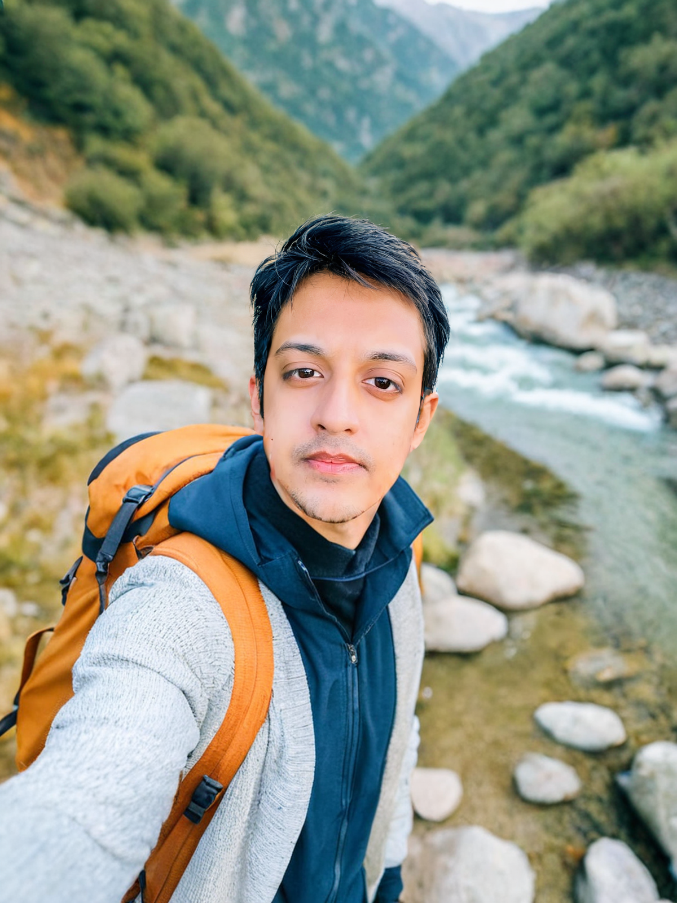

02
01
WHO I AM
Pandu Ranga Reddy Konala
I am a highly intrigued and passionate believer in acquiring knowledge in the spheres of Computer Security and Machine Learning, especially with their usage concerning how they are engineered and the challenges faced. In the pursuit to do this, I have acquired a high degree of knowledge, from computer architecture to principles of software engineering. I am passionate about working with system security management and would like to focus on research towards the domain of "Provably- Secure System Designs."
My primary research interest is in Automation of Security Configurations, the Internet of Things, Access Control-Management and Cloud Computing. I love innovation. Be it software, hardware or art - I honestly don’t see a big difference between those. I hope you will learn something by going through my website. Maybe, you’ll learn something about me :) Feel free to contact me with any questions. I’m also open to collaborating on interesting projects.


Research
I love the latest technology-driven content such as publications, conference talks and CTF's. I believe that if you can study and understand the pattern in the related field of interest and give your output a story, you will get a big return.

Design
I think design is a core component in one's research. It interlinks the concepts that have been researched with the innovation factor of an individual, thus bringing the idea alive.

Implementation
Technology has the power to change the lives of the world and individuals, as the phrase "well-developed science and technology is indistinguishable from magic." I want to be a person who can always catch up with the latest technology and respond to changes. I think it is the mission of researchers as well as engineers to promote innovation and implement ideas for the community.
03
Qualifications

04
Skill Set


05
Certification

06
Experience
• Software Developer at Quantum Base, Lancaster, UK from June to August 2020
• Information Security Analyst Intern at Infosec future Pvt Ltd, Lucknow, Uttar Pradesh, India for eight weeks in summer of 2018
• Redhat System Administrator Intern at Complete Open Source Solutions (COSS), for four weeks in summer of 2017
• Ethical Hacker Intern at Star computers, Visakhapatnam, India, for four weeks in summer of 2016
07
Patents
1. Published a patent entitled “A Framework For Secure Media Streaming Using InterPlanatery File System” with an application No.202141003380, dated 25/01/2021 at Controller General of Patents and Designs and Trademarks, Govt. of India.
2. Published a patent entitled “Authenticated Secure Radio Communication Using Strong Physically Unclonable Functions” with an application No.202041052482, dated 12/12/2020 at Controller General of Patents and Designs and Trademarks, Govt. of India.
08
Papers
1. “Access mechanism using inter planetary file system.” International Journal of Engineering & Technology, Volume 7, No 4, 2018,ISSN: 2227-524X
2. “Securing Data in Cloud- A Physical Cyber System.” Journal of Computer Science Engineering (ISSN: 2456-1843) Volume-3, Issue-12, December-2017, ISSN-2456-1843